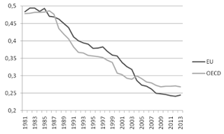
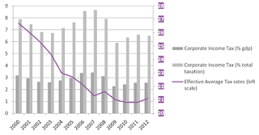

For years now, there is a call by economists to set a minimum tax rate on capital at the global level. Arguments were theoretical at first (e.g. Baldwin and Krugman, 2004) and are now increasingly based on empirical analysis. For instance, Laffitte et al. (2020) propose a minimum effective tax rate at 20% on the global profit of multinational firms. This is an interesting proposition, even if we may be skeptical about the possibility of this implementation due to the past failures to lead any kind of coordinations on that respect.
European and international rules of taxation are archaic.
In the current system, profits are generally taxed according to the source based principle, i.e. where profits have been reported, while interest and royalty payments are deductible at source and taxed in the residence country of the recipient.
Initially designed in the 1920s, under the auspices of the League of Nations, such a system was mostly geared at avoiding double taxation.
The problem is particularly serious when firms import and distribute at home, goods produced abroad by subsidiaries. In that case, each entity has to compute its profit by using “transfer prices”, in principle set on comparable transactions between unconnected parties. This is the “arm’s length pricing” principle. This principle defines how the profits of MNFs are allocated between countries. The main problem is that the manipulation of this principle is widespread in practice. Corporations in high-tax countries tend to sell intermediate goods at low price to their low-tax subsidiaries while these entities export to them at high price.
For instance, Hanson, Mataloni and Slaughter (2005) find that the demand of American multinational enterprises for imported inputs is higher when affiliates face lower corporate income tax rates. Vicard (2014) finds that the manipulation of transfer prices in France led multinationals firms to decrease the value of exports by 0.8% and to increase imports value by 0.5% in 2008. This strategy enabled multinational groups to reduce the corporate tax bill they paid in France by 10% on average, saving approximately 8 bn USD in 2008. Davies, Martin, Parenti, and Toubal (2017) confirm the existence of tax avoidance through transfer pricing in France, but observe that this strategy is concentrated on a small subset of firms (driven by the exports of 450 firms to ten tax havens), which leads them to conclude that significant revenue increases can be obtained by authorities with minimal cost by targeting enforcement.
These analyses may underestimate tax avoidance since comparable transactions between unconnected parties to set the transfer prices are not always available to detect the fraud. In developed tertiary economies, such a problem is particularly acute since many incomes are derived from intangible assets related to intellectual property (patents, trademarks, brands and copyrights). For instance when Google transferred its technology in 2003 to its Bermuda subsidiary (just before being listed as a public company), no comparable transaction was available and the fair transfer price (in the arm’s length pricing spirit) seems hard, not to say impossible to set. A common tax planning strategy is to locate intangible property in a group subsidiary resident in a low-tax country and license it to other group subsidiaries residing in high-tax countries. The most famous practice of this kind is the “Double Irish Dutch sandwich” used by Google. In this evasion scheme, revenues are shuttling back and forth in four “shops”: the US, Bermuda, Ireland and the Netherlands.
The historical collective failure to lead tax discussion on a multilateral basis and thus by default the necessity to rely on bilateral agreements is at the origin of treaty shopping. Multinational firms with stateless income tax planning exploit tax loopholes at the detriment of high-tax countries where these firms operate and sell most of their products. Transfer pricing (including the location choice of intangible property that benefits of preferential tax treatment in many countries) automatically leads to tax evasion which could explain 70% of profit-shifting (European Commission, 2015).
Debt shifting is also a common practice to evade taxation. MNFs easily shift profits by financing group companies in high-tax countries offering interest deductibility with intra-group debt from affiliates residing in low-tax countries. Adopted in 1990 and amended in 2003, the European directive on Parent-subsidiary taxation failed to properly address this issue.
The figure below reports the mean of corporate income tax rates in the EU (including countries only after each enlargement) and eleven OECD members with European countries before they join the EU.

Immobile agents (domestic firms, workers) are asked to contribute more while multinational firms exploit tax loopholes at the expense of high-tax countries in which these firms operate and sell most of their products. Tax competition has been the rule, leading to a ‘race to the bottom’ on statutory tax rates and discriminatory tax treatments.
More recently some other small countries, like Luxembourg, or larger ones like the UK, have taken the leadership of this tax competition game. This competition has been more or less intense depending on the sector considered. For instance, firms in the financial sector have been much more prone to relocation with an estimated marginal effect of taxes that is twice larger in this sector than in manufacturing (Lawless et al. 2017).
The recent multiplication of IP box regimes to attract intangible assets certainly also reflects a new field of tax competition.
As previously described, intangible assets are highly mobile and thus are very sensitive to corporate income taxation as shown by Griffith et al. (2014) concerning the location of patents. In response, many European countries have introduced “Intellectual Property (IP) Box regimes” reducing the rate of corporate tax levied on the income derived from patents and intellectual property (Evers et al. 2015). These preferential tax regimes have been clearly identified as harmful tax practices by the OECD (2013a) and by the European Commission (2013). Alstadsæter et al. (2015) even identify that patent box regimes deter local innovative activities.
To analyse tax competition, the study of the Effective Average Tax Rates (EATR) is interesting since this tax rate measures the wedge between the pre- and post-tax return on a typical investment project. Discrete choices of investment made by multinational firms between alternative locations depend on EATR.

Comparing the different tax rates, the drop in the Statutory tax rate has been more pronounced than the EATR (and EMTR), indicating that taxes are set to attract the most mobile base, while maintaining a relative higher tax on less mobile firms.
Interestingly, Laffitte et al. (2020) shows that “air transportation, automotive manufacturing, and cruise lines have very low effective tax rates, both in the U.S. and the E.U., which indicates a modest contribution to the funding of public services. Despite low effective tax rates, these firms will receive financial help from governments all over the world”.
In Candau and Le Cacheux (2018), we analyze tax competition on different types of capital using the EATRs on industrial buildings, intangibles, machinery, and inventory assets for 25 European countries over the period 1998–2012. We also lead a more classical regression by using CIT rates (from Eurostat) for the same sample of European countries but for a longer period of time (1996–2013). To deal with the endogeneity bias, we adopt an instrumental approach in two-steps.
Without surprise, we find that the elasticity of the EATR to the averaged tax rates of partners is much larger for financial and investment assets than for industrial buildings. This result illustrates the intensity of the race to the bottom concerning the most mobile base.
We need to stop this race to the bottom. A common tax in rich countries is the solution. A minimum level at 20% as the one proposed by Laffitte et al. (2020) is not too high and represents a compromise to facilitate negotiations.
All other references are listed in Candau and Le Cacheux (2018).